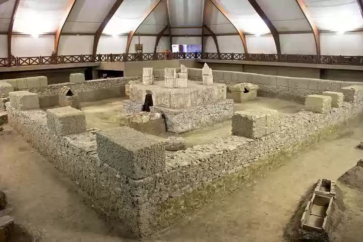

SRBIJA

Viminacium, današnji Kostolac, blizu Požarevca, na ušću Mlave u Dunav, jedan je od najznačajnijih rimskih gradova i vojnih logora od I do VI veka.
Civilno naselje uz logor u vreme Hadrijanove vladavine (117–138) stiče status municipijuma, grada sa visokim stepenom autonomije. U vreme vladavine
Gordijana III (239) grad dobija status kolonije rimskih građana, kao i pravo kovanja lokalnog novca. Status kolonije je najviši status koji je jedan
grad mogao steći u okvirima rimske imperije. Viminacijum je više puta biran za mesto koncentracije vojske i polaznu tačku u mnogobrojnim ratovima.
Lokacija na Dunavu je Viminacijumu omogućila brz ekonomski razvitak. Izuzetni nalazi otkriveni na nekropolama oko grada (do sada je pronađeno preko
14.000 grobova) potvrđuju pretpostavke o velikom bogatstvu njegovih stanovnika, a freske u grobnicama predstavljaju vrhunac kasnoantičke umetnosti.
Grad je više puta pustošen u najezdama Gota, Huna i konačno Avara. Unutar i oko grada otkriveni su amfiteatar, monumentalne zgrade, raskošne terme i
tragovi razvijene infrastrukture, pre svega ulica, akvedukata i kanalizacije. Dosadašnja otkrića svakako su potvrdila poseban značaj Viminacijuma kao
vodeće rimske metropole na ovom delu dunavskog limesa.
Naučno-istraživački centar Domus Scientiarum u Viminacijumu je objekat sa višestrukom namenom – pored toga što će naučnici iz Srbije i sveta koristiti
njegove kabinete, biblioteke i atrijume za istraživanja, rad sa studentima, letnje škole, te organizacije kongresa i tematskih skupova – istovremeno
će služiti i za smeštaj turista koji u sve većem broju pokazuju interesovanje za boravak na Viminacijumu. Domus Scientiarum predstavlja vrhunac ponude
u arheološkom turizmu, sa jedinstvenom atmosferom antičkog Rima, u kome posetilac može biti šta kod poželi – arheolog, legionar ili imperator.
Arheološki lokalitet je otvoren za posete od početka februara do kraja novembra, tokom leta od 09.00 do 19.00, tokom proleća i jeseni od 10.00 do 17.00.
Za najavljene posete moguće je organizovati obilazak tokom cele godine i van navedenih termina.